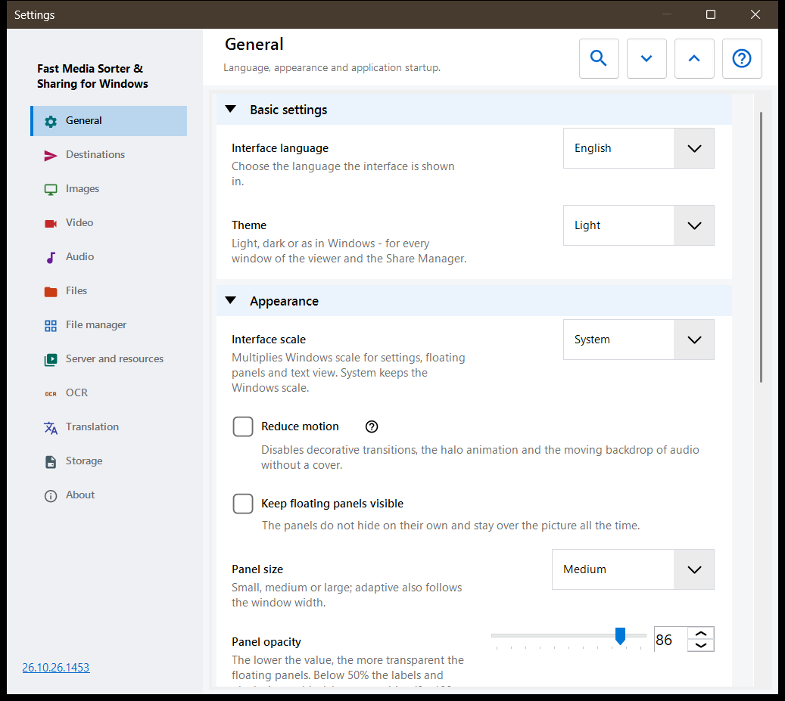
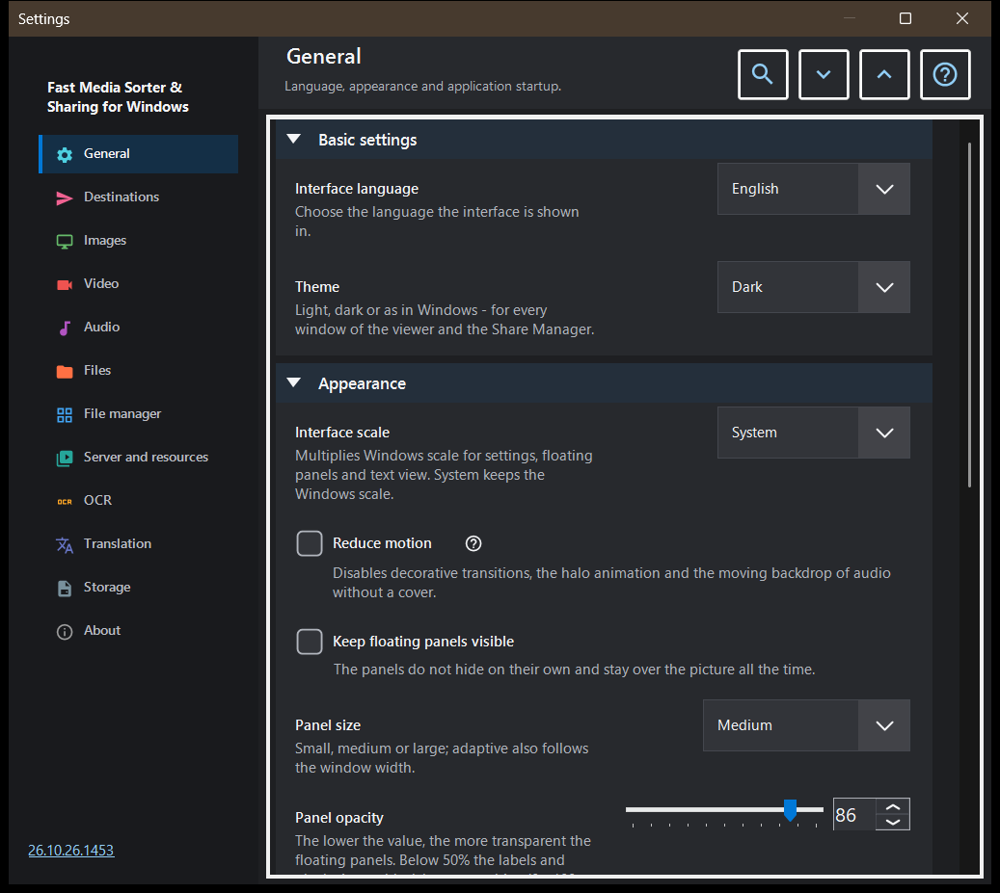

Settings
Settings
What this is for
The Settings window holds every option of the viewer. It opens with F2, with the 'Settings' button of the toolbar, or from the file manager of the image panel with its 'Settings..' button, which jumps straight to the File manager page. The pages are listed in a sidebar on the left, and the groups on a page can be folded.


In this order
- Pick a page in the sidebar, or type a word into 'Search settings' to find an option.
- Use 'Expand all' and 'Collapse all' to open or fold every group of the page.
- Change the options you need.
- Press Esc to close the window.
The elements
General
Language and theme (Theme), then the look of the floating panels: interface scale, reduced motion, pinning, size, opacity, corners, the info overlay and hiding the mouse cursor. The group Startup decides what happens at start (open at start, resume the last file, allow new windows) and has 'Show the welcome steps again', which reopens the welcome wizard. The group Advanced settings exports and imports the extra settings and restores the defaults.
Destinations
The ten folders that the keys 1-9 and 0 move a file to; Shift with a top-row digit copies into the same folder. The grid has one row per key: select a row, then use 'A folder on this PC..', 'Resources' (an SFTP or SMB folder) or 'Clear', or drop a folder onto the row. The group Destination table appearance sets position, width, text size, opacity and visible rows of the table shown over the picture, and 'Destination table over the image' turns that table on or off.
Images
How pictures open and look: scale of a new image, automatic rotation by the EXIF tag, 'Zoom with the mouse wheel', animated graphics through the video player and the picture, file size and date info. Image background sets the colour around a picture, the Perspective background and the halo (dynamic, animated, speed). Slideshow behaviour sets the interval, random order, whether manual navigation stops the show and what the interface does during it. The advanced part has quality scaling and the thumbnail card size.
Video
Whether video files take part in browsing, autoplay, the action at the end of a clip, remembering the position and 'Shared sound: audio and video'. Further groups hold the preferred audio and subtitle languages and the playback control: what a single click does, the delay of the controls, controls while paused and three seek steps.
Audio
Whether audio files take part in browsing, the action at the end of a track, the default volume and start muted. The info and control group holds the always visible audio bar, the visualiser for files without a cover and the sleep timer.
Files
File handling: advance after copy, what happens on a name collision and after a copy or move, the status line on file operations, creating a missing destination folder, 'Delete to the Recycle Bin' and the delete confirmation. File types covers subfolders, extensions, documents, the text preview size and other files. Further groups set the recent files and folders, the archive limits and the secure .fd-sec files. Keys and associations has the 'Keyboard shortcuts' button, which opens the hotkeys window, and the file associations for images and video.
File manager
Options of the file manager of the image panel: Display mode (tiles or list), Content filter, hidden files and the action for files that are not media. The group Places chooses which places are shown (local, resources, devices) and has 'Remember sort'.
Server and resources
The list Servers and network folders holds the SFTP and SMB resources the viewer can browse and use as destinations. The group Android / SFTP is for publishing folders of this PC over SFTP to the Android app; it has the connection guide and the 'Manage the SFTP server for the Android client..' button.
OCR
'Enable OCR' turns text recognition on, and 'Run automatically' lets it run by itself. The group Text recognition sets the source language, the quality, the mode and the download of language data.
Translation
Choose the provider ('Translation provider') and the target language ('Translation language'); further fields hold the service address, the local Ollama server, the model and the API key. The group Translation over the image sets the opacity and visibility of the translation panel over the picture.
Storage
Cache limits with a clear button for each cache: decoded images, thumbnails of the image panel, archives and network resources. The OCR disk cache has 'Cache results on disk', its own limit and a clear button.
About
Product information and links: Updates, Reset settings, related projects, Program help, the site, GitHub, releases, the privacy page, the MIT licence and third-party notices. 'Send the logs to the author' shows a consent dialog that lists what goes into the archive and then hands it to your mail client; the program opens no network connection for it.
Documents
Enable the PDF reader separately from sortable file filters. Choose single page, continuous scrolling or a spread, page colors, zoom, search scope and cache limits. Page buttons change pages; file buttons change files. Document text controls own B/N, digits and Delete. Escape returns to the canvas. Positions and named bookmarks are separate from appearance; resetting appearance preserves them. Read aloud uses installed Windows voices. Passwords stay in the open session. Reading is local and uses a temporary copy so the original can be moved. Ordinary settings export omits reading history, bookmarks and document overrides.